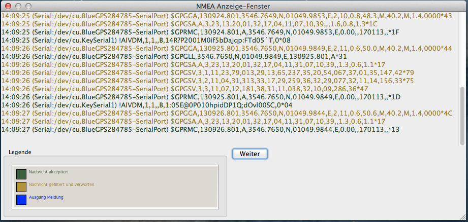

Einstellungen Verbindungen
In OpenCPN ab Version 3.2 ist die Schnittstelle für externe Daten (GPS, AIS usw.) komplett überarbeitet worden. Bei Klick auf den Punkt "Verbindungen" sehen Sie zunächst den Fensterinhalt wie oben im Bild (wurde noch nichts konfiguriert, ist die Liste "Daten-Verbindungen" noch leer). Erst bei Klick auf den Button "Verbindung hinzu" oder auf einen schon bestehenden Eintrag in der Liste sieht das Fenster wie unten aus (eventuell muß das Fenster aufgezogen werden).
Doch der Reihe nach von oben:
NMEA Kurs- und Geschwindigkeitsdaten filtern, Filterperiode (s) Damit wird ein Mittelwert von Kurs-über-Grund (COG) und Geschwindigkeit-über-Grund (SOG) mit einer konfigurierbaren Datenrate gebildet. Diese Funktion ist z.B. sinnvoll, wenn die Daten vom GPS aufgrund des Seegangs stark variieren. Das Dashboard Plugin ist davon nicht betroffen, COG und SOG werden etwa jede Sekunde erneuert.
Zeige NMEA-Datenfluß Ist dies aktiviert, erhalten Sie ein Fenster mit den NMEA Datensequenzen für OpenCPN. Sind Filter für NMEA Datensequenzen
eingeschaltet, wird das entsprechend der Legende in diesem Fenster angezeigt.
Die Schaltfläche Pause stoppt den Datenfluß im Fenster, mit Weiter wird er wieder aufgenommen. Sollen NMEA Daten in eine Datei gespeichert werden, verwenden Sie dazu
das VDR Plugin.
Wird gpsd verwendet, werden keine Daten angezeigt. Zur einfachen NMEA Datenstrom-Analyse fügen Sie folgende Zeile in die Datei opencpn.ini
unter [Settings] ein:
DebugNMEA=1500
Damit erhalten Sie bis zu 1500 Analyse-Nachrichten über den NMEA Verkehr im opencpn.log
Hier in diesem Beispiel oben ist auch zu sehen, wie im Datenfluß GPS-Daten (mit Prefix $GP) und AIS-Daten (mit Prefix !AI) erscheinen. Jede Zeile enthält den Zeitstempel, die Datenquelle und die Datensequenz. Wurde ein Filter gesetzt oder ein Datenausgang spezifiert, erscheinen die Zeilen in der entsprechenden Farbe wie in der Legende erläutert.

In diesem Beispiel wurde für den GPS-Eingang ein Filter gesetzt, der nur RMC und GLL Sequenzen durchläßt.
Upload-Format für Furuno GP3X
Für ausgehende Datenverbindung an Furuno Geräte zu aktivieren, weil Furuno eine eigene NMEA-Version zum Hochladen von Routen verwendet. Die
OpenCPN-Routen dürfen nicht zweistellig numerisch benannt sein (z.B. 10, 21 usw.).
Verwende Garmin GRMN (Host) Modus für Uploads
Für ausgehende Datenverbindung an Garmin Geräte zu aktivieren, weil Garmin Geräte kein Hochladen mit Standard-NMEA akzeptieren.
Verwende magn. Peilung in Ausgangs-Sequenz ECAPB Für Autopiloten die die magnetischen Daten falls vorhanden haben wollen.
Daten-Verbindungen Liste der Datenverbindungen (aktiv/passiv), löschen und/oder hinzufügen mit den Einstellungen des Fensters Eigenschaften.
Eigenschaften
Dieser Bereich des Fensters erscheint, wenn "Verbindung hinzu" geklickt wurde oder ein Eintrag der Liste markiert wurde.
Im ersten Fall muß die neue Verbindung konfiguriert werden, im zweiten Fall kann eine Verbindungs-Konfiguration geändert werden. Anschließend klickt man
entweder auf "Anwenden" oder "OK", wenn die Konfigurationen abgeschlossen sind und die Einstellungen beendet werden sollen.
Zunächst entscheidet man sich, ob ein serielles (virtuelles) Gerät oder ein Netzwerk angeschlossen werden soll. Im Beispiel Bild oben wurde ein serielles
Gerät konfiguriert. Bei Port kann man mit Klick auf das Pfeil-Gadget eine Klappliste mit verfügbaren Ports öffnen.

Erscheint Ihr GPS oder sonstiges Gerät nicht in der Klappliste, können Sie es auch in dem Feld von Hand eintragen.
Aus der Klappliste daneben wählen Sie bitte die Baudrate, die Ihr Gerät unterstützt. 4800 ist der normale Wert für viele Geräte, aber einige neuere GPS
Empfänger verlangen einen anderen Wert. Prüfen Sie die Dokumentation.
Details für Mac OS X: Der Gerätename beginnt üblicherweise mit /dev/cu...
Geben Sie in einem Terminal-Fenster den Befehl ls /dev/cu* ein, um alle auf Ihrem System vorhandenen Geräte zu sehen.
Ist ein richtig konfiguriertes GPS verbunden, eingeschaltet und erkannt, dann wird ein grünes  Symbol oder das GPS Status Symbol
oben rechts in der Werkzeugleiste gezeigt. OpenCPN konfiguriert automatisch die Bits, Parity usw. Es
muß nicht extra spezifiziert werden.
Symbol oder das GPS Status Symbol
oben rechts in der Werkzeugleiste gezeigt. OpenCPN konfiguriert automatisch die Bits, Parity usw. Es
muß nicht extra spezifiziert werden.
Weiteres auch unter GPS Einrichten.
Protokoll Momentan ist nur NMEA0183 möglich, NMEA2000 wird vielleicht noch kommen. Allerdings wird für NMEA2000 spezielle Hardware benötigt, da NMEA2000 kein serielles sondern ein CAN Protokoll ist, das nur mit einem CAN zu Seriell/USB Adapter an einen Computer übertragen werden kann.
Priorität Kann zwischen 0 und 9 gesetzt werden. Sie ist z.B. für den Fall gedacht, daß verschiedene angeschlossene Geräte unter Umständen eine gleiche NMEA-Sequenz senden, von denen ein Gerät bevorzugt werden soll und nur bei dessen Ausfall die Sequenz von dem anderen Gerät genommen werden soll. Einstellung "0" ist die höchste Priorität.
Prüfe Checksumme Aktiviert werden nur geprüfte Sequenzen durchgelassen.
Verwende Garmin GRMN/GRMN (Host) Modus für Uploads Muß aktiviert sein, wenn Sie ein Garmin GPS verwenden, weil Garmin keine Uploads mit dem Standard NMEA 0183 unterstützt. Das ist ein Manko aller Garmin Empfänger.
Upload-Format für Furuno GP3X Wie oben bei Furuno.
Eingang- bzw. Ausgang-Filter Hier können NMEA Sequenzen angegeben werden, die entweder berücksichtigt oder verworfen werden sollen.

Mit Klick auf den Button öffnet sich ein Fenster zur Auswahl der Sequenzen:
Viele NMEA Sequenzen sind bereits in der Liste enthalten. Es können einzelne oder alle ausgewählt werden oder die Auswahl gelöscht werden. Mit dem Button "Hinzu" kann auch eine eigene Sequenz hinzugefügt werden, die den Standards entsprechen muß, um keine Fehlermeldung zu bekommen.
Informationen zu NMEA Sequenzen: Siehe unter NMEA Sequenzen
Wird eine NMEA Sequenz an einer Eingangs-Verbindung gefiltert, erreicht sie immer noch den internen Multiplexer. Daher ist sie auch an einer Ausgangs-Verbindung verfügbar, wenn sie dort nicht auch ausgefiltert wird, mit Ausnahme des Durchreichens einer Netzwerk-Verbindung vom Eingang zum Ausgang. Haben Sie eine UDP Verbindung und eine Broadcast-Adresse als Ausgang, setzen Sie die Priorität der Verbindung niedriger als jede reale NMEA Quelle.
Einige Beispiele:
Eingang Filterung

Mit obigem Filter steht dann in der Verbindungen-Zeile: Eingang: Nur AIVDM,AIVDO, Ausgang: Kein
Ist stattdessen "Abgewiesene Sequenzen" gewählt, steht in der Zeile: Eingang: Alle außer AIVDM,AIVDO, Ausgang: Kein
Ausgang Filterung
Ähnlich wie bei der Eingangsfilterung oben werden hier die drei Sequenzen gesendet und in der Zeile steht: Eingang: Kein, Ausgang: Nur WPL,GSV,GPwpl
Und hier werden sie stattdessen verworfen, in der Zeile steht: Eingang: Kein, Ausgang: Alle außer WPL,GSV,GPwpl
Ausgang an diesen Port (als Autopilot oder NMEA Repeater) Schließlich kann der Port auch als Ausgang definiert werden zu einem Autopiloten oder einem anderen NMEA Gerät. Verwenden Sie eventuell auch die Filterfunktion, wenn Ihr Autopilot z.B. die Sequenz RMC benötigt. Die meisten Autopiloten wollen hingegen die RMB Sequenz haben.
Wird statt "Seriell" ein "Netzwerk" für eine neue Datenverbindung gewählt, sehen die Eigenschaften anders aus:
Protokoll Es kann zwischen TCP, UDP und GPSD gewählt werden. Im Beispiel (Bild oben) ist als Adresse die Internet-Adresse eines Servers in San Francisco
mit seinem zugehörigen Port eingetragen, der AIS-Rohdaten sendet. Dieser Eintrag wird dann mit Button "OK" oder "Anwenden" in die Liste der Daten-Verbindungen übernommen.
TCP ist das Standard Internet Protokoll und wird so zur Übertragung der Daten des AIS-Servers benutzt. Bei der Kommunikation mit TCP-fähigen, interaktiven NMEA Geräten wird
üblicherweise der Port 10110 verwendet und nicht UDP. UDP ist das ideale Protokoll zur Verteilung von NMEA Daten, da nicht verbindungs-orientiert (kein Client-Server).
GPSD (Bild oben) ist ein GPS Server, von dem mehrere verschiedene Applikationen Daten beziehen können. Datenserver ist normalerweise "localhost", aber man kann einen GPSD Server in einem lokalen Netzwerk mit vielen OpenCPN Clients haben. In dem Fall wird die Netzwerk-Adresse des GPSD Servers angegeben. Mit OpenCPN können sogar Windows Instanzen so zu einem GPSD Server verbunden werden. Der Standard Port für GPSD ist 2947.
Weitere Beispiele der neuen Schnittstelle für Verbindungen
Hat man keinen AIS-Datenempfänger zur Verfügung, kann man zumindest zu Hause mit einer Internet-Verbindung AIS-Rohdaten von bestimmten Quellen im Internet beziehen und so mal AIS mit OpenCPN testen. Im Beispiel unten wurde solch ein Sender in San Francisco konfiguriert:

Man muß dann natürlich auf der OpenCPN-Karte in das Gebiet von San Francisco gehen, um die Schiffe dort zu sehen. Mit der neuen Geräte-Schnittstelle von OpenCPN sind jetzt also sowohl serielle (virtuelle) als auch Netzwerk-Anschlüsse möglich. Zudem können Ein- und Ausgänge nach bestimmten Daten-Sequenzen gefiltert werden.
Im folgenden Beispiel werden 2 Computer, das VDR-Plugin (Voyage-Data-Recorder), externes GPS-Gerät und UDP verwendet:
Auf dem Haupt-Computer mit der IP-Adresse 192.168.0.9 wurde eine mit VDR aufgenommene Datei mit GPS-, AIS- und DSC-Daten geöffnet. Für den zweiten Computer ist seine IP-Adresse
192.168.0.2 mit Port 4661 mit UDP und "Ausgang an diesen Port" (Output on this Port) eingestellt. Port 4661 wurde hier nur genommen, weil dieser Port auf den Firewalls der Computer offen war.
Auf dem zweiten Computer sind die Einstellungen ebenso, die Adresse zum Haupt-Computer ist 192.168.0.9. Mit diesen Einstellungen werden die Daten der VDR-Datei problemlos zum zweiten
Computer übertragen.
Dann wurde VDR gestoppt, ein GPS angeschlossen und eine neue Verbindung /dev/ttyUSB0 hinzugefügt.
Mit diesen Einstellungen und keinen Änderungen am zweiten Computer wurde die GPS-Position zum zweiten Computer gespiegelt.
Das nur mal zur Anschauung, was mit der neuen Schnittstelle möglich ist.